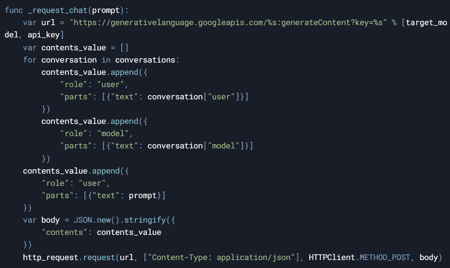
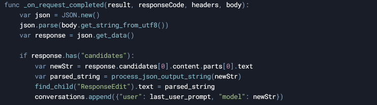
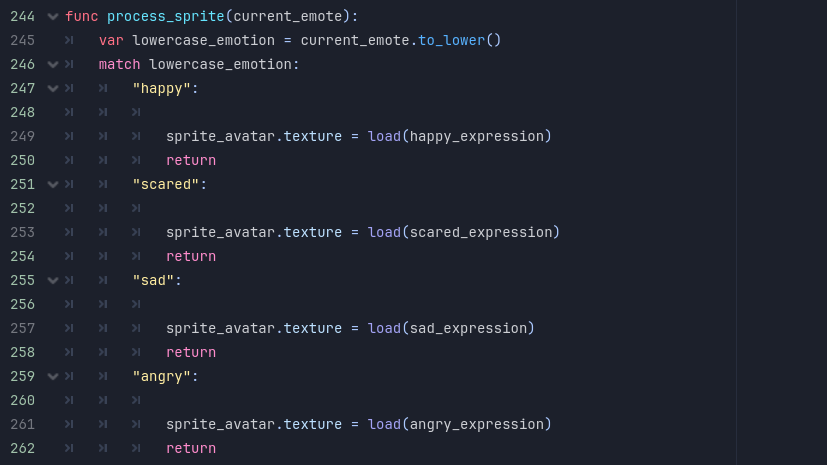
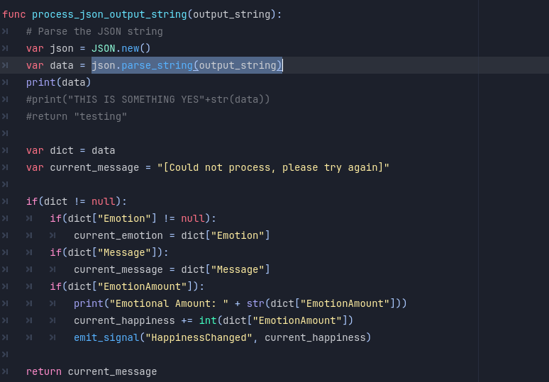
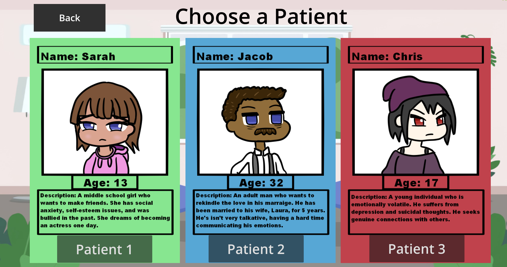

Mental Patch
Gameplay
Download Here: Playable Build
Project Files: Github Repository
Overview
A 2d text-based simulator where you take on the role of a therapist. You talk with digital NPC patients that have their own problems. The goal is to say the correct things in order to raise their Emotional Level meter. The player wins the game by getting their patient’s Emotional Level meter to 100, achieving happiness for the patient. Through this game, it will teach the players about empathy and the importance of mental health.Goal
I am fascinated by the ethical and innovative uses of Generative AI and Large Language Models in game design. I love talking with AI chatbots and roleplaying, so I decided to combine the two with a Serious Game element to it. This project was a personal exercise in integrating LLMs (specifically Gemini) into a game developed in Godot.Development
The development of Mental Patch began with a fascination for integrating Generative AI into game design. I had previously worked on a Dating Sim LLM project, which gave me a foundational understanding of how to communicate with the Gemini API. This experience proved valuable and efficient, as I already had a basic setup for making API calls and handling responses. However, this project presented new challenges, particularly in creating a unique experience that felt meaningful and engaging through the lens of a therapist.Building the Foundation
First, I needed a way to integrate Gemini into Godot. Fortunately, I already started exploring a public Godot project that showcased the utility of the Gemini API. This project provided example scenes and code snippets that demonstrated how to format API requests and parse responses. Using this as a reference, I set up the initial connection to the Gemini API by making URL calls with my generated API key. The first call was crucial—it established the connection and allowed me to send prompts to the Gemini 1.5 model.To connect to the Gemini API, I used Godot’s HTTPRequest node to send POST requests to the Gemini API endpoint. The API key, stored in a settings.json file, was loaded at runtime and appended to the request URL. The request body included the conversation history and a user prompt, formatted as a JSON object. This allowed the API to generate context-aware responses based on the ongoing dialogue. Once the response was received, the script parsed the JSON output to extract the AI’s message, emotion, and emotional value, updating the UI and gameplay systems accordingly.

The _request_chat function constructs the request URL and body, including the conversation history and the user’s prompt. The request is sent to the Gemini API using the HTTPRequest node. The _on_request_completed function handles the API response. It parses the JSON data, extracts the AI’s message, emotion, and emotional value, and updates the game state accordingly. The process_sprite function updates the patient’s sprite based on the parsed emotion, while check_happiness checks if the happiness level has reached a win or fail condition.


Crafting the AI’s Behavior
The next step was to design the AI’s behavior to fit the role it was intended in the game, as a therapist. I began by testing prompts to ensure the AI could roleplay as a patient effectively. The initial prompt included:- The personality of the character (e.g., shy, anxious, or depressed).
- The role it was playing (a patient seeking therapy).
- The format for its response (JSON).

I chose JSON because it allowed the AI to send back structured data, including the patient’s message, their current emotion, and their emotional health value. This structure made it easier to parse and use the data in the game. I realized JSON format was the best as it acted as a tagging system, which allows me to parse the data easier.
To refine the AI’s responses, I included an example message in the prompt and defined the range of emotions it could express (e.g., happy, sad, anxious). I also specified the minimum and maximum values for the emotional health meter (0 to 100). After several iterations of testing and tweaking, I finally got the AI to respond in a way that felt authentic and appropriate for the game’s tone.
Parsing and Using the Data
Once the AI’s responses were structured in JSON, I wrote a function to parse the data. The emotional health value was returned as a number, and the JSON format made it easy to extract this data using a tagging system. Godot has a method that converts a JSON output into a Dictionary object, in which the variables can then be accessed.
From there, I assigned the dictionary values to variables and created separate functions to handle:
- Displaying the patient’s sprite based on their current emotion.
- Adjusting and checking the emotional health value.
- Displaying the patient’s message in the UI
This modular approach made the code easier to maintain and allowed me to iterate quickly during playtesting.
Designing the Patients
With the core functionality in place, I shifted my focus to designing the three AI patients. Each patient was designed to represent a different difficulty level, reflecting the varying degrees of mental health challenges:- Sarah (Easy): Struggles with social anxiety. Her conversations are lighter, and her emotional health is easier to improve.
- Jacob (Medium): Faces love and marriage problems. His dialogue is more nuanced, requiring the player to think carefully about their responses.
- Chris (Hard): Battles depression and suicidal thoughts. His conversations are emotionally intense, and his emotional health is harder to improve.

Playtesting and Iteration
Playtesting was a critical part of the development process. After plenty of sessions roleplaying as a therapist, testing different dialogue options, and observing how the AI responded. The hardest part was ensuring the win condition (raising the emotional health meter to 100) was achievable, especially for Chris, whose depression made him resistant to positive feedback. I had to adjust the emotional health valuables for each character in order to make the experience feel right.There were moments when the AI would become unresponsive or difficult to reason with, particularly during rapid-fire conversations that exceeded Gemini’s free-tier quota’s rate limit, so I would have to pause conversing for several minutes in order to resume. To address this, I added a reset button that allowed players to restart the conversation if the AI stopped responding.
Also if the AI is unable to generate a response for any reason, I set a default message in the code that will be played automatically. The message is to encourage the player to send in a similar response again as the AI will be able to generate a response afterwards.